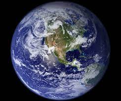
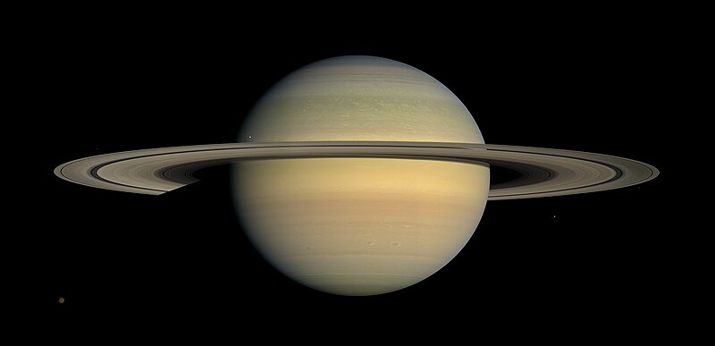

Mercury
Mercury
 Venus
Venus

Earth
 Mars
Mars
 Jupiter
Jupiter

Saturn
 Uranus
Uranus
 Neptune
Neptune
The word planet comes from the Greek planḗtai, means ‘wanderer’.
This is because the planets do appear to wander listlessly across the night sky.
The planets seem to move relative to the fixed stars in backward and forward directions.
So basically, what is a planet?
An astronomical body orbiting a star or stellar remnant that is massive enough to be rounded by its gravity,
is not massive enough to cause thermonuclear fusion, and has cleared its neighbouring region of planetesimals(moon).
The prevailing theory of planet formation is the nebular hypothesis, which posits that an interstellar cloud collapses out of a nebula to create a young protostar orbited by a protoplanetary disk.
Planets grow in this disk by the gradual accumulation of material driven by gravity, through accretion.
Our solar system has eight planets, and five dwarf planets - all located in an outer spiral arm of the Milky Way galaxy called the Orion Arm.
Explore to know more about the planets